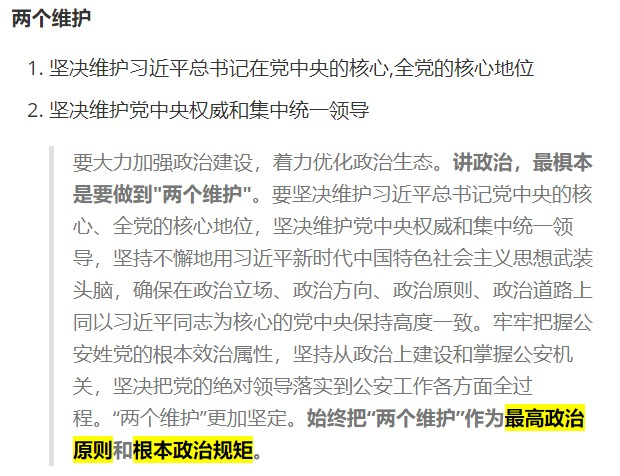

第一章 政治素质
政治素质是指人民警察素质的核心，是人民警察必备的首要素质
人民警察首要的政治素质：对党、对人民的绝对忠诚
第一节 人民警察的政治立场与忠诚度
一、政治立场
- 是在各项管理和执法活动中，观察、分析和处理各种问题的根本立足点和出发点。
1. 必须站在党的立场
- 站在党的立场就是要坚持党对公安工作的绝对领导这一根本政治原则
习近平总书记指出：“对党绝对忠诚，要害在绝对两个字，就是唯一的、彻底的、无条件的、不掺任何杂质的、没有任何水分的忠诚”
母哥：“公安忠诚，检察院正义，法院公平”
- 要牢牢把握公安机关是党和人民手中掌握的刀把子,公安机关必须坚持"公安姓党"这一根本政治属性 ,旗帜鲜明讲政治,不断增强"四个意识",坚定"四个自信",提高政治站位,坚定"两个维护",确保党和政府各项重大措施畅通无阻地贯彻执行
- 党的绝对领导，是新时代政法工作的性质保证; 党的绝对领导，是政法工作的本质特征和最高原则。坚持党的绝对领导，最根本的政治保证是增强"四个意识"、坚定"四个自信"、做到"两个维护"，确保政治立场坚定、政治方向正确。
四个意识
- 政治意识
- 大局意识
- 核心意识
- 看齐意识
四个自信
- 理论自信
- 道路自信
- 制度自信
- 文化自信
两个维护
-
坚决维护习近平总书记在党中央的核心,全党的核心地位
-
坚决维护党中央权威和集中统一领导
要大力加强政治建设，着力优化政治生态。讲政治，最椇本是要做到"两个维护"。要坚决维护习近平总书记党中央的核心、全党的核心地位，坚决维护党中央权威和集中统一领导，坚持不懈地用习近平新时代中国特色社会主义思想武装头脑，确保在政治立场、政治方向、政治原则、政治道路上同以习近平同志为核心的党中央保持高度一致。牢牢把握公安姓党的根本效治属性，坚持从政治上建设和掌握公安机关，坚决把党的绝对领导落实到公安工作各方面全过程。“两个维护”更加坚定。始终把“两个维护”作为最高政治原则和根本政治规矩。
两个确立
-
确立习近平同志党中央的核心,全党的核心地位
-
确立习近平新时代中国特色社会主义思想的指导地位
党的十九届六中全会通过的《中共中央关于党的百年奋斗重大成就和历史经验的决议》（以下简称《决议》）明确指出：“党确立习近平同志党中央的核心、全党的核心地位，确立习近平新时代中国特色社会主义思想的指导地位，反映了全党全军全国各族人民共同心愿，对新时代党和国家事业发展、对推进中华民族伟大复兴历史进程具有决定性意义
两个全面
-
全面建设社会主义现代化国家
-
全面推进中华民族伟大复兴
“为全面建设社会主义现代化国家、全面推进中华民族伟大复兴而团结奋斗!”党的二十大制定了当前和今后一个时期党和国家的大政方针，为新时代新征程党和国家事业发展指明了前进方向、明确了奋斗目标、确立了行动指南，充分彰显了新时代中国共产党人高度的历史自觉和强烈的使命担当，更加坚定了亿万人民在新时代新征程上展现新气象新作为的决心和信心。
两个结合
-
把马克思主义基本原理同中国具体实际相结合
-
把马克思主义基本原理同同中华优秀传统文化相结合
习近平总书记在庆祝中国共产党成立100周年大会上明确提出**“把马克思主义基本原理同中国具体实际相结合、同中华优秀传统文化相结合”（简称“两个结合”）**的要求，特别是提出要把马克思主义基本原理同中华优秀传统文化相结合，极大丰富、拓展了马克思主义中国化的基本内涵
2. 必须站在人民立场
习近平总书记在庆祝中国共产党成立95周年大会上发表重要讲话指出：“坚持不忘初心、继续前进，就是坚信党的根基在人民、党的力量在人民，坚持一切为了人民、一切依靠人民。充分发挥广大人民群众积极性、主动性、创造性，不断把为人民造福事业推向前进”。
- 人民警察必须坚持以人民为中心，坚持全心全意为人民服务的根本宗旨
- 坚持一切为了人民、一切依靠人民、从群众中来、到群众中去的群众路线。
人民警察的初心和使命
-
人民公安为人民
公安部党委书记、部长赵克志在2017年12月25日在北京调研时强调：“要深入学习贯彻党的十九大精神，以习近平新时代中国特色社会主义思想为指导，切实增强“四个意识”、提升政治站位，牢记人底公安为人民的初心和使命，大兴调查研究之风，树立鲜明基层导向，深入推进各项公安改革，采取有力措施加强和改进新时代公安基层基础工作，努力为维护首都安全稳定作出新的更大贡献。”
习题
【2023年公安院校联考公安专业知识第3题】
公安机关是人民民主专政的重要工具，是党和人民手中的“刀把子”，政治性是第一属性，讲政治是第一要求。下列属于公安机关最高政治原则和根本政治规矩的是( ) A.两个全面 B.两个结合 C.两个确立 D.两个维护
答案: D 解析: 
【2019年公安院校联考公安专业知识真题第2题】
公安机关做好新时代公安工作，切实担负起做新时代中国特色社会主义事业建设者捍卫者的职责使命，必须坚持的初心和使命是： A.立党为公执政为民 B.立警为公执法为民 C.人民公安为人民 D.全心全意为人民服务
答案: C
解析: 
全心全意为人民服务是人民警察的根本宗旨
【2020年823联考公安专业知识第1题】
习近平总书记指出：“坚持不忘初心，继续前进，就要坚信党的根基在人民、党的力量在人民，坚持一切为了人民、一切依靠人民。”这表明人民警察最应该坚持的政治立场是( ) A.公平立场 B.正义立场 C.法治立场 D.人民立场
答案: D
解析: 
【2020年公安院校联考公安专业知识第1题】
习近平总书记在全国政法工作会议中指出，党的十八大以来，党中央把政法工作摆到更加重要的位置，维护了政治安全、社会安定、人民安宁，促进了经济社会持续健康发展。为了切实履行好创造和谐稳定社会环境的重大政治责任和历史担当，新时代政法工作最根本的政治保证是( ) A.坚持稳中求进工作总基调 B.坚持以人民为中心的发展思想 C.加快推进政法队伍革命化、正规化、专业化、职业化建设 D.增强“四个意识”、坚定“四个自信”、做到“两个维护"
答案: D
解析:
【2019年社会招警真题第67题】
(多选)公安机关认真学习贯彻习近平总书记关于加强党的政治建设特别是推进中央和国家机关党的政治建设的重要指示精神，牢固树立“四个意识”，坚定“两个维护”，毫不动摇地坚持党对公安工作的绝对领导、全面领导，毫不动摇地坚持“公安姓党”的根本政治属性，毫不动摇地坚持政治建警的基本方针，下列属于“两个维护”内容的是( ) A.坚决维护国家统一和社会稳定 B.坚决维护习近平总书记在党中央的核心、全党的核心地位 C.坚决维护社会主义制度和依法治国 D.坚决维护党中央权威和集中统一领导
答案: BD
解析:
【2021年328多省联考公安专业知识第2题】
公安机关在“坚持政治建警全面从严治警”教育整顿中，大力加强政治建设，毫不动摇地坚持党对公安工作的绝对领导，把讲政治作为第一要求。讲政治，最根本的是( ) A.做到“两个维护” B.增强“四个意识” C.坚定“四个自信” D.坚持“四个铁一般”要求
答案: A
解析:
【2021年328联考公安专业知识真题第4题】
2021年初，公安部制定下发《关于切实加强和改进老年人公安服务管理工作的意见》，提出了六方面16项具体措施，不断加强和改进老年人公安服务管理工作。这一举措突出体现的是( ) A.坚持党对公安工作的绝对领导 B.坚持以人民为中心的根本立场 C.坚持执法公正的职业操守 D.坚持从严治警的基本方针
答案: B 解析:从题干中可知,公安部下发的是关于老年人的文件,提现的是人民警察站在人民立场. A,B,C题中均为体现,故选B
【2020年社会招警公安专业知识真题第12题】
党的十九大报告提出依法治国是治国理政的基本方式，表明了党坚持依法治国的坚定决心和信心。依法治国在实现国家现代化治理过程中，起着极其重要的作用。公安民警作为执法者，要做到依法治国的典范。广大公安民警站在与黑恶势力正面交锋的最前沿，敢为砥柱立中流，与最狡猾、最凶残、最器张的犯罪分子展开殊死较量，所以人民警察的素质对于从事警察这一职业至关重要，下列属于人民警察素质中最核心的素质是( ) A.身体素质 B.法律素质 C.综合素质 D.政治素质
答案: D
解析: